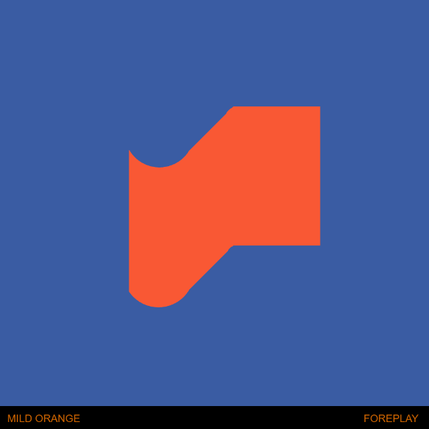
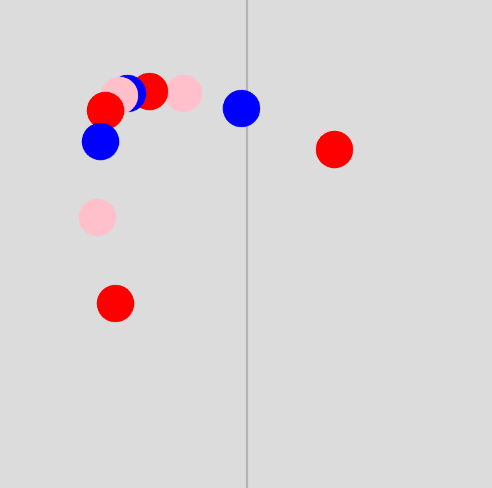
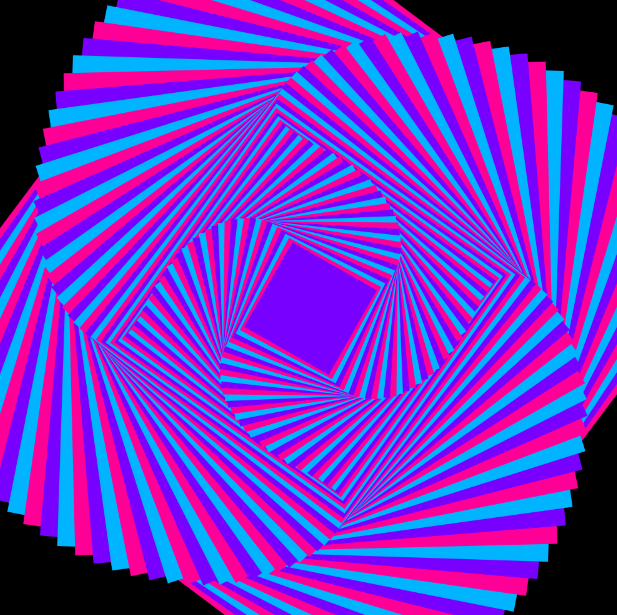
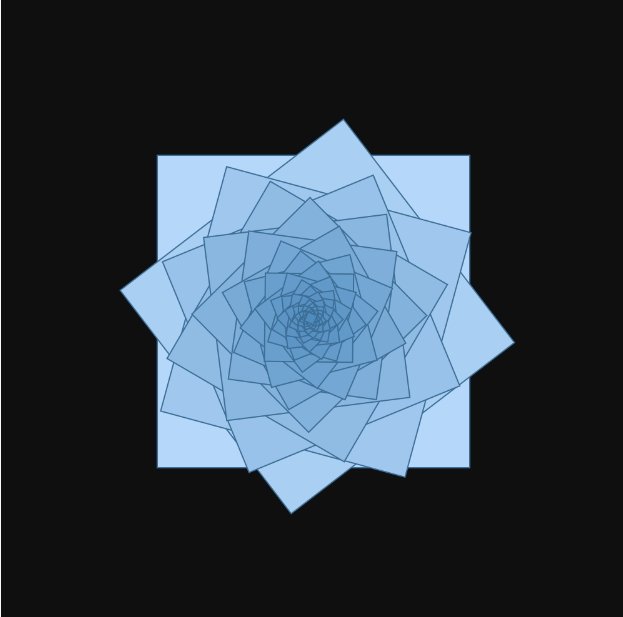
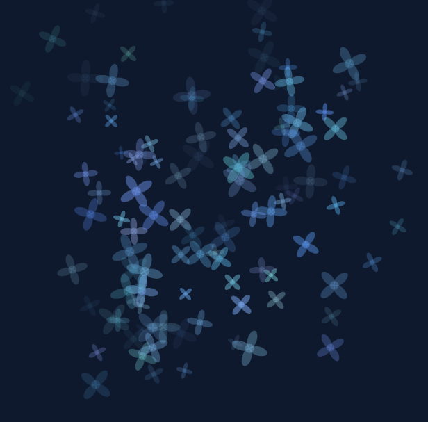
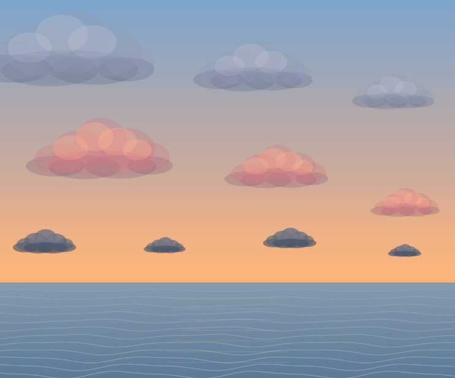

Portafolio IE
Se utilizó p5.js como herramienta de programación creativa, explorando la creación de formas, patrones, movimientos e interacciones. A través de distintos ejercicios, comprendí cómo el código puede convertirse en un medio de expresión visual y diseño.




